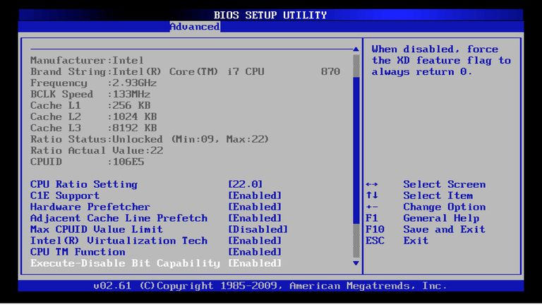
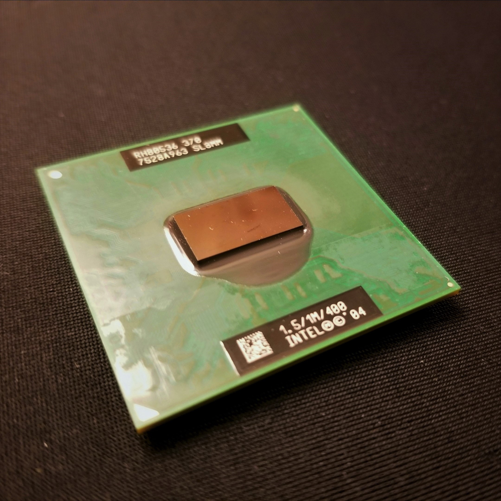
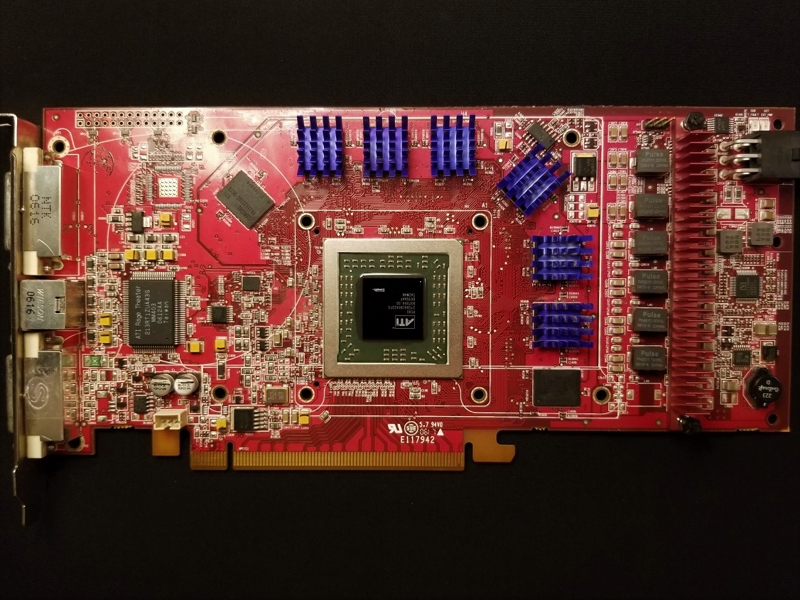
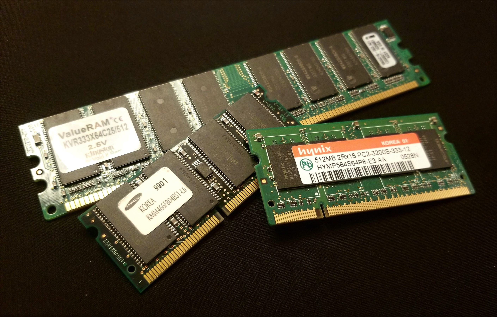

Noctua fans are considered to be one of the
best case fans that one can get. However, most PC enthusiasts believe that the colour scheme looks
rather ugly.
Noctua fans are considered to be one of the
best case fans that one can get. However, most PC enthusiasts believe that the colour scheme looks
rather ugly.The BIOS has information, usually stored in a flash chip, that will initialize a computer's hardware. Without a BIOS, a computer will not be able to start properly. Although the BIOS is considered to be software, one would most likely never change, update, or modify any part of it. This is different from more common types of software, such as programs, applications, etc. This type of software (the BIOS) is called firmware.
 Above: a computer BIOS made by the company American Megatrends. Photo source: Tim Fisher, at www.Lifewire.com
Case fans provide ventilation for a PC's components. Many of a computer's components generate heat as a waste product, mainly from the CPU and GPU. By having fans pushing air into the case and fans sucking air out of the case, hot air can be removed from the inside of the computer, ensuring that the components stay relatively cool.
Noctua fans are considered to be one of the
best case fans that one can get. However, most PC enthusiasts believe that the colour scheme looks
rather ugly.
The case of a computer is the shell that holds most of a desktop PC's components. Computer cases come in many different sizes, such as full tower (largest), mid tower, mini tower, small form factor and ultra small form factor. (smallest) Different cases will support different motherboards and more/less storage bays. Cases can also have windows on the side panels, such as on the Fractal Design Define S, shown below:
 This Fractal Design Define S is
a mid-tower case.
This Fractal Design Define S is
a mid-tower case.
A CPU stands for "Central Processing Unit". This component is in charge of doing all the calculations and processing that happens in a computer. A CPU in extremely complex in it's contruction; with hundreds of millions of transistors inside a small rectangle of a few millimetres.
 This Intel Celeron M 370 CPU from the year 2005 uses little power as it was designed for use in smaller laptops. The dark rectangle in the middle is called the "die" and it contains a total of 144 million transistors. The total size of the CPU is about 35x35mm. Some CPUs have a metal cover over the die that is called a "heat spreader." Info source ( Intel® Celeron® M Processor 370 (1M Cache, 1.50 GHz, 400 MHz FSB) Product Specifications. (n.d.). Retrieved February 25, 2018, from https://ark.intel.com/products/27145/Intel-Celeron-M-Processor-370- 1M-Cache-1_50-GHz-400-MHz-FSB )
A GPU stands for "Graphics Processing Unit". This component is solely used to help the CPU create and display images, videos, and other graphical objects. A GPU's construction is similar to a CPU. GPUs are commonly found as "graphics chips", which are built into motherboards, or as "graphics cards", separate PCBs (Printed Circuit Boards) that can be plugged into a motherboard.
 This ATI Radeon X1900 graphics card had its heat sink removed so that actual GPU can be seen. The GPU itself is the green square in the middle of the card. It is similar in appearance to a CPU.
A PSU (Power Supply Unit) is what provides the other components with power that the PC needs to function. Power supply units are designed to be highly robust in both their physical construction and in their electronics. This is because other components such as the CPU and GPU need a very steady and constant flow of DC electricity to work. These components are also very sensitive to voltage changes. It is common for an entire motherboard and its components to fail due to a sudden failure of the power supply unit. Most power supplies usually provide a combination of 3.3V, 6V and 12V to the PC. Common brands of PSUs include: Antec, Corsair, EVGA, Cooler Master, and Thermaltake.
 Above: An average power supply
unit, made by OCZ Technology. This unit is semi-modular, meaning some power cables can be removed or
added. Photo source:
Brad Ward, at www.pcmech.com
Above: An average power supply
unit, made by OCZ Technology. This unit is semi-modular, meaning some power cables can be removed or
added. Photo source:
Brad Ward, at www.pcmech.com
The motherboard is a large PCB (Printed Circuit Board) where the all the communication between a computer's components happens. The CPU, GPU, RAM, and storage all are connected to the motherboard, where data is sent between the components. A motherboard also has all the ports that allow the connection of computer peripherals. Computer peripherals are the devices that one uses to send input and receive output to/from a computer. Common computer peripherals include: a mouse, a keyboard, a monitor, computer speakers, and microphones.
 Above: an MSI Z370 motherboard. There is a wide assortment of
ports.
Above: an MSI Z370 motherboard. There is a wide assortment of
ports.
A computer's RAM (Random Access Memory) holds temporary information that the CPU needs to do calculations and also contains code that the computer will need to use throughout it's operation. This type of memory needs to be accessed very quickly, from various locations inside the RAM's memory chips.
 Above: An assortment of both laptop and desktop RAM. Each individual piece is often referred to as a single "RAM module" or a single "stick of RAM".
Return to the top of the page.
© Trevor Li 2018, all rights reserved. All images by Trevor Li unless noted. Background image by the Lubuntu Artwork Team